Коллекция 2015-2016 гг.
Теплицы и Парники
Здесь представлен не самый полный набор предлагаемой продукции.
Эта галерея лишь для ознакомления с продукцией.
Для ознакомления со всем спектром приходите к нам в магазины.
-
теплица каркас
от 3 700 руб. за 2 м. от 5 300 руб. за 4 м.


Теплица
Алтайская
Описание
Самая недорогая теплица, низкая цена за кв.м.
Оценкованный М-образный профиль
Расстояние между дугами 50 см
Сымые КРЕПКИЕ КАРКАСЫ теплицы из оцинкованной трубы и профиля — ДОСТОЙНАЯ КРЕПОСТЬ
Спецификация
| Ширина, мм: | 3000 |
| Высота, мм: | 2000 |
| Длинна, мм: | 4000 / 6000 / 8000 |
| Каркас: | Оцинкованный М-образный профиль |
Теплица
Дачная 2ДУМ
Описание
Теплица для дачи – очень важное сооружение на дачных участках. Благодаря ей овощи растут и зреют в оптимальных для них условиях независимо от погоды. Площадь укрываемого грунта на дачном участке зависит от длины тепличного каркаса.
Теплица из оцинкованного профиля. Арочного типа. Имеет в каждом торце дверь и форточку. Расстояние между дугами 50см. Внутри каркаса через каждый метр поддерживающая усиливающая подпорка. Между торцевой и тоннельной частью, а также в дверных проемах резиновые уплотнители.
Готовьтесь к весне заранее! И Вы не только сможете получить ранний урожай, но и сэкономите значительные деньги!
Спецификация
| Ширина, мм: | 3070 |
| Высота, мм: | 2000 |
| Длинна, мм: | 4000 / 6000 / 8000 |
| Каркас: | Сборный из стального оцинкованного профиля |
| Дополнительные форточки: | Есть для арочной части (Опционально) 46,8x45,8 см |
| Вес теплицы без поликарбоната: | 40 / 57 / 68 / 86 кг. |
Теплица по методу
Митлайдер
Описание
Практичная теплица по методу Митлайдера уже давно знакома и уважаема огородниками страны. Её просто собрать (или переделать имеющиеся), она поддерживает оригинальный микроклимат за счет своеобразного проветривания, защищает растения от резких перепадов температур. Главная особенность — это присутствие форточек в оригинальной крыше теплицы. При правильном расположении на участке (высокая часть кровли на северной стороне) теплица выдерживает максимальные снеговые нагрузки.
Спецификация
| Ширина, мм: | 3000 |
| Высота, мм: | 2420 |
| Длинна, мм: | от 4000 кратная 2000 (любая) |
| Каркас: | Цельный из квадратной трубы покрытой полимерной краской |
| Форточки: | Дополнительные форточки есть в арочную часть теплицы |
Теплица
Мария-Делюкс
Описание
Качественная и доступная по цене теплица российского производства разработана специально для суровых условий сибирского климата. Это изделие подкупает потребителей своей простотой и функциональностью, обеспечивая замечательные урожаи сельскохозяйственных культур. Стоимость теплицы, долговечность и легкость в эксплуатации являются главными ее преимуществами.
Спецификация
| Ширина, мм: | 3000 |
| Высота, мм: | 2100 |
| Длинна, мм: | 4000 / 6000 / 8000 и т.д. кратно 2 метрам |
| Каркас: | Усиленная оцинкованная труба 30х20 мм |
Теплица
Перчина-М
Описание
Площадь укрываемого грунта - 6,5 м².
Теплица «Перчина-М» имеет с обоих торцов двустворчатые двери. Покрытие для каркаса теплицы изготавливается из сотового поликарбоната.
При покупке и установке теплицы осенью, вы не только можете получить ранний урожай в апреле, но и экономите значительные деньги!
Спецификация
| Ширина, мм: | 1560 |
| Высота, мм: | 1750 |
| Длинна, мм: | 4200 |
| Каркас: | Cборный из стального оцинкованного профиля |
| Дополнительные форточки: | Есть для арочной части (Опционально) |
| Вес теплицы без поликарбоната: | 35 кг. |
| Максимальная снеговая нагрузка: | 20 кг./м² (10 см. снега) Для использования теплицы зимой рекомендуется устанавливать подпорки. |
Теплица
Грибок
Описание
Начинает приобретать популярность теплица формы Грибок. За счет почти вертикальных стенок и оригинальной крыше можно выращивать высокорослые растения близко с стенкам и максимально рационально использовать плодородную площадь теплицы.
Спецификация
| Ширина, мм: | 2800 |
| Высота, мм: | 2000 |
| Длинна, мм: | кратная 2000 (любая) |
| Форточки: | Есть для арочной части, для вертикальной части будет открыта продажа весной 2016 г. |
Теплица
Слава Люкс
Описание
Теплица имеет двухскатную открывающуюся крышу, что позволяет проводить дополнительное проветривание в жаркую погоду, а также створки крыши легко можно демонтировать на зимний период для предотвращения деформации теплицы под снеговой нагрузкой.
Каркас изготовлен из оцинкованной трубы незамкнутого сечения 20х20х1.2мм с дополнительными ребрами жесткости. Собирается на пауках.В качестве материала для трубы используется оцинкованная сталь с классом 140. Соответствующая требованиям ГОСТа.
Спецификация
| Ширина, мм: | 2840 |
| Высота, мм: | 2260 |
| Длинна, мм: | 6000 |
| Каркас: | Сборный из оцинкованной трубы не замкнутого типа |
Теплица
Стрелка
Описание
Полностью адаптирована для снежных зим, каждая дуга выдерживает до 700кг снеговой нагрузки.
Новый мощный оцинкованный профиль 60x20мм.
Высота каркаса идеально подходит для выращивания высокорослых культур, а ширина оптимальна для двух грядок.
Каркас новой теплицы «Стрелка» выполнен из мощного оцинкованного профиля.
Теплица «Стрелка» предназначена для создания микроклимата, благоприятного для выращивания садово-огородных культур на дачных и приусадебных участках. Каркас теплицы выполнен из мощного оцинкованного металла. Площадь укрываемого грунта зависит от длины теплицы. Высота установленного каркаса теплицы - 2,5м, ширина - 2,6м. Теплица может иметь различную длину кратную 2м. Нужная длина теплицы обеспечивается покупкой дополнительных пакетов с удлиняющими вставками в добавление к базовой длине 2м. Каркас теплицы изготовлен из оцинкованного железа и собирается с помощью винтов и гаек. Теплица крепится на грунте закапыванием специальных окончаний каркаса. В комплект входит все необходимое для крепления покрытия. Комплектация теплицы покрытием выполняется по заявке покупателя. Теплица имеет два дверных проема в противоположных торцах. Комплектация форточками выполняется по заявке покупателя.
Для каркаса в полной комплектации с установленными стяжками и боковыми подкосами предельная снеговая нагрузка возникает при весе снегового покрова 450 кг на 1м2 горизонтальной поверхности земли, что соответствует 2,25 м свежевыпавшего и 1,1 м слежавшегося снега.
Теплица бывает шириной 3,0 и 2,6 метра соответственно, причем ширина 3 метра в пререгативе. При ширине 3 метра теплица высотой 2,4 метра.
Спецификация
| Ширина, мм: | 2600 |
| Высота, мм: | 2500 |
| Длинна, мм: | может быть любой, кратная 2, 4, 6 или 8 метрам |
| Каркас: | Сборный из стального оцинкованного профиля |
| Дополнительные форточки: | Есть для арочной части (Опционально) 83x37 см в тоннельную часть по заказу покупателя |
Теплица
Уралочка
Описание
Цельные дуги и торцы с дверьми и форточками собираются несколькими болтами. Проста в сборке надежна в эксплуатации. Арочной формы и по типу «митлайдер» из квадратной трубы с полимерным покрытием в заводских условиях. Расстояние между дугами 100 см и усиленный вариант - 66 см.
Есть каркасы теплиц шириной 250 см, 300 см и 400 см. Есть с расстоянием между дугами 100 см, 66 см - усиленная. Есть классической «арочной» формы и по типу «Митлайдер».
Теплицы шириной 400 см имеет высоту 250 см. Каркас в основании изготовлен из квадратной трубы сечением 40 мм, дуги сделаны из трубы сечением 25 мм. Дуги расположены на расстоянии 66 см.
Спецификация
| Расстояние между дугами 100 см | |
|---|---|
| Ширина, мм: | 2500 / 3000 |
| Высота, мм: | 2000 |
| Длинна, мм: | от 4 000 до 12 000 (и более), кратная 2 000 |
| Каркас: | Квадратная труба, полимерное покрытие, 20x20x1.5 мм |
| Дополнительные форточки: | Есть для арочной части (Опционально) 98x60 см, в тонельную часть по заказу покупателя |
| Расстояние между дугами 66 см | |
| Ширина, мм: | 3000 / 4000 |
| Высота, мм: | 2000 / 2500 |
| Длинна, мм: | от 4 000 до 12 000, кратная 2 000 |
| Каркас шириной 300 мм: | Квадратная труба, полимерное покрытие, 20x20x1.5 мм |
| Каркас шириной 400 мм: | Квадратная труба, полимерное покрытие, 20x20x1.5 мм |
| Дополнительные форточки: | Есть для арочной части (Опционально) 64x60 см, в тонельную часть по заказу покупателя |
Теплица
Фермер
Описание
У теплиц очень большой ассортимент по ширине и высоте и может удовлетворить любые требования Покупателя. Каркасы теплиц для промышленного производства урожая производятся из различных металлов и обработки.
Для более подробной информации необходимо связаться с нашим представителем по тел.:
8 (901) 658-00-72
Теплица
Ювис
Описание
Теплица оснащена двумя широкими дверями (90 см), в которые легко пройдет любая тачка, и двумя большими окнами (почти вполовину ширины двери). Теплица имеет каркас, изготовленный из сварной профильной трубы размерами 20x20x1,5 мм. Тип соединения – труба в трубу.
Главное преимущество, которым обладает теплица «Ювис» — низкая цена.
Спецификация
| Ширина, мм: | 3000 |
| Высота, мм: | 2100 |
| Длинна, мм: | 4000 / 6000 / 8000 и т.д. кратно 2 000 |
Теплица
Дачная
Описание
Площадь укрываемого грунта - 17,7м².
Теплица «Дачная» имеет один дверной проём и форточки в обоих торцах.
Покрытие в основной комплект не входит, но по желанию заказчика теплица комплектуется специальной современной плёнкой толщиной 150мкм удобной шестиметровой ширины.
Спецификация
| Ширина, мм: | 3000 |
| Высота, мм: | 2000 |
| Длинна, мм: | 6200 |
| Каркас: | Сборный из стального оцинкованного профиля |
| Укрывной материал: | Тепличная плёнка "Десногор", 150 мкн, 6х9 м. |
| Вес теплицы без укрывного материала: | 40 кг. |
| Максимальная снеговая нагрузка: | Не предназначена для использования в зимнее время. На зиму плёнка снимается. |
Теплица
Дачная-2Д
Описание
Площадь укрываемого грунта - 18,3м².
Теплица «Дачная-2Д» имеет два дверных проёма в противоположных торцах и в каждом дверном проеме имеет дверь и форточку. Этот вариант теплицы предназначен для установки на открытых участках с сильными ветрами. Каркас имеет более частый продольный и поперечный набор.
Покрытие в основной комплект не входит, но по желанию заказчика теплица комплектуется специальной современной плёнкой толщиной 150мкм удобной шестиметровой ширины.
Спецификация
| Ширина, мм: | 3000 |
| Высота, мм: | 2000 |
| Длинна, мм: | 6000 |
| Каркас: | Сборный из стального оцинкованного профиля |
| Укрывной материал: | Тепличная плёнка "Десногор", 150 мкн, 6х9 м. |
| Вес теплицы без укрывного материала: | 59 кг. |
| Максимальная снеговая нагрузка: | Не предназначена для использования в зимнее время. На зиму плёнка снимается. |
Теплица
Дачная-2ДУ
Описание
Площадь укрываемого грунта - 18,3м².
Теплица «Дачная-2ДУ» имеет два дверных проёма в противоположных торцах и в каждом дверном проеме имеет дверь и форточку. Этот вариант теплицы предназначен для установки на открытых участках с сильными ветрами. Каркас имеет более частый продольный и поперечный набор.
Покрытие в основной комплект не входит, но по желанию заказчика теплица комплектуется специальной современной плёнкой толщиной 150мкм удобной шестиметровой ширины.
Спецификация
| Ширина, мм: | 3000 |
| Высота, мм: | 2000 |
| Длинна, мм: | 6000 |
| Каркас: | Сборный из стального оцинкованного профиля |
| Укрывной материал: | Тепличная плёнка "Десногор", 150 мкн, 6х9 м. |
| Вес теплицы без укрывного материала: | 59 кг. |
| Максимальная снеговая нагрузка: | Не предназначена для использования в зимнее время. На зиму плёнка снимается. |
Теплица
Томато
Описание
Площадь укрываемого грунта - 12м².
Тоннель является упрощенным вариантом теплицы, в котором отсутствуют конструкции дверей.
В конструкции тоннеля предусмотрено надежное закрепление пленки.
Покрытие в основной комплект не входит, но по желанию заказчика теплица «Перчина» комплектуется специальной современной плёнкой толщиной 150 мкм удобной шестиметровой ширины.
Дверь изготавливается покупателем самостоятельно по примеру на фотографии.
Спецификация
| Ширина, мм: | 2500 |
| Высота, мм: | 1750 |
| Длинна, мм: | 4880 |
| Каркас: | Сборный из стального оцинкованного профиля |
| Укрывной материал: | Тепличная плёнка "Десногор", 150 мкн, 6х7,2 м. |
| Вес теплицы без укрывного материала: | 27 кг. |
| Максимальная снеговая нагрузка: | Не предназначена для использования в зимнее время. На зиму плёнка снимается. |
Парник
Огурчик
Описание
Площадь укрываемого грунта - 5 м².
Каркас парника составляется из дуг и продольной перекладины, которые выполнены из специального оцинкованного стального профиля.
В конструкции парника «Огурчик» предусмотрено надежное закрепление пленки и удобство открывания-закрывания парника с помощью свободных реек.
Покрытие в основной комплект не входит, но по желанию заказчика парники «Огурчик» комплектуются специальной современной плёнкой толщиной 150 мкм.
Спецификация
| Ширина, мм: | 1000 |
| Высота, мм: | 1000 |
| Длинна, мм: | 5000 |
| Каркас: | Сборный из стального оцинкованного профиля |
| Укрывной материал: | Тепличная плёнка "Десногор", 150 мкн, 3х6,5 м. |
| Вес теплицы без укрывного материала: | 11 кг. |
| Максимальная снеговая нагрузка: | Не предназначена для использования в зимнее время. На зиму плёнка снимается. |
Парник
Слава-СП
Описание
Парник «СЛАВА-СП» изготовлен из оцинкованной трубы незамкнутого квадратного сечения 20x20x1,2 мм с дополнительными ребрами жесткости. Толщина металла 1,2 мм. Парник рассчитан на покрытие из поликарбоната и имеет боковые откидные крышки, облегчающие доступ к грядкам.
Упаковка: Упаковка состоит из двух пакетов, обернутых в полиэтилен. Габариты пакетов 1300х870х80 мм и2000х80х80 мм
Спецификация
| Ширина, мм: | 1300 |
| Высота, мм: | 870 |
| Длинна, мм: | 2000 / 4000 |
Не нашли что вам подходит?
Свяжитесь с нами и мы подберем теплицу нужную вам по телефонам:
(3952) 72-20-72, (3952) 96-03-31
или по эл. почте: tepliza38@yandex.ru
Почему Кронос?
Сотовый поликарбонат
Сотовый поликарбонат необходим для хорошего урожая.
Выбирая лучший вы обеспечивайте длительный срок эксплуатации.
Покупая поликарбонат компании «Кронос» вы не беспокоитесь о защите урожая более 20 лет.

Популярная
Продукция
Помимо прочего мы также предлагаем:
Сотовый полипропилен; Душевые баки; Козырьки; Септик-накопители;
Автонавесы; Детские спортивные комплексы; Ёмкости; Мусорные баки.


Сотовый
Полипропилен
Описание
Сотовый полипропилен (ячеистый полипропилен) — это пластиковые листы различной толщины и плотности, получаемые методом экструзии. По структуре - аналогичен панелям из сотового поликарбоната, но более эластичен, легок и недорог. Компания «Кронос-трейд» предлагает листы сотового полипропилена толщиной от 2 до 5 мм, плотностью от 300гр/м2 до 1700гр/м2. Стандартные размеры листа сотового полипропилена:
- 2000×3000 мм (6 м2);
- 2000×6000 мм (12 м2).
Структура и толщины сотового полипропилена
Сотовый полипропилен имеет двухстеночную структуру:
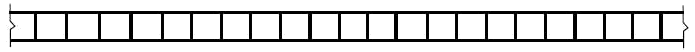Толщина листа может быть:
- 2 мм
- 2.5 мм
- 3 мм
- 3.5 мм
- 4 мм
- 4.5 мм
- 5 мм
Цвета сотового полипропилена
При использовании сотового полипропилена обратите внимание на то, что он может быть практически любого цвета. Это полезно, если вы хотите использовать полипропилен в тон вашему фирменному стилю, классификации тары и т.д. Кроме того, «Кронос-трейд» может не только наносить фирменный логотип на сотовый полипропилен, но и делать полноцветную печать всего листа. Стандартные цвета, предлагаемые нашей компанией:
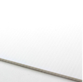 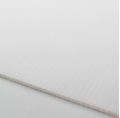 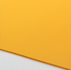 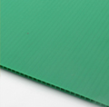 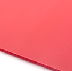 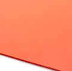 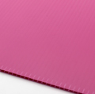 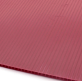 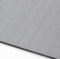 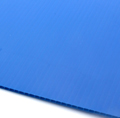 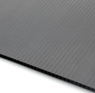При определенном технологическом объеме возможно изготовление индивидуального цвета.
Применение сотового полипропилена
Сотовый полипропилен имеет самый различный спектр применения:
- Тара и упаковка
- Для дома и офиса
- Производство мебели
- Строительство
- Промышленность
- Автотранспорт
- Выставочный бизнес
- Рекламный бизнес
- Сельское хозяйство
Ёмкости
Описание
МТП «АБРИКОС» предлагает продукцию ООО «Кронос-трейд»: ёмкостей методом ротационного формования на линии итальянского оборудования фирмы Roto Plastic. Все ёмкости 200, 300, 500, 1000, 3000 литров изготавливаются из пищевого полиэтилена низкой плотности импортного производства и совершенно безопасны, экологичны и долговечны в использовании с пищевыми продуктамии питьевой водой, так же ёмкости можно использовать для хранения различных химических, сыпучих веществ и нефтепродуктов. Ёмкость цилиндрическая 200, 300, 500, 1000, 3000 литров полипропиленовая предназначена для хранения и перевозки различных жидкостей — пищевых и не пищевых, в том числе и нефтепродуктов. Учитывая то что ёмкости из полиэтилена значительно дешевле металлических аналогов, а с внедрением новых технологий производства имеют ряд существенных преимуществ: методом ротационного формования, не подвержена коррозии и может использоваться как на открытом воздухе так и под землей. Баки данной серии идеально подходят для эксплуатации в системах водопровода, в условиях пищевого и хомического производств, для обустройства пилива на дачных участках, для организации мобильной АЗС. Имеют гарантию до 10 лет.
- Ёмкости Не подвергаются коррозии.
- Ёмкости Не имеют сварных швов, выполнены цельно литыми что исключает любые утечки и внутренние напряжения.
- Лёгкость монтажа на ёмкость дополнительного оборудования (отводы, заглушки, датчики, насосы).
- Ёмкости Химически устойчивые.
- Ёмкости имеют лёгкий вес.
- Ёмкости возможно использовать как на открытых площадках при температуре от -40 до +50 С (в их состав входит защита от УФ лучей).
- Ёмкость возможно закапывать в грунт ,ёмкость не подвергаются коррозии, и имеют рёбра жёсткости ,что обеспечивает дополнительную надёжность и прочность.
- Ёмкости имеют эстетичный внешний вид.
- Ёмкости имеют равную толщину стенки по всей площади.
- Ёмкости из полиэтилена не представляют интереса для сборщиков металлолома.
Все ёмкости изготавливаются из пищевого полиэтилена низкой и средней плотности и совершенно безопасны и экологичны в использовании с пищевыми продуктами и питьевой водой, так же ёмкости можно использовать для хранения и перевозки различных химических веществ, сыпучих веществ и нефтепродуктов.
Таблица устойчивостиКрышка ёмкости может быть двух видов:
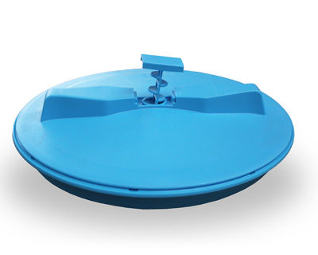1) С дыхательным клапаном
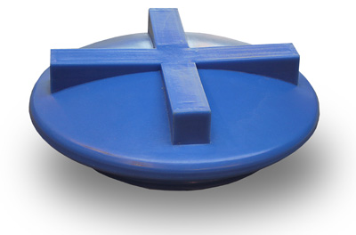2) Без дыхательного клапана
Душевые баки
Предназначены для оснащения душевых кабин на дачах и в коттеджных поселках
Великолепно хранят воду, не позволяя ей цвести и загрязняться во время длительного хранения; не ломаются, не трескаются, не ржавеют, имеют длительный срок эксплуатации.
Бак идеально подходит для создания душевой кабины, выполняя одновременно роль крыши и бака. Душевые баки производства компании «Кронос» обладают рядом преимуществ:
- Безопасность и экологичность.
- Химическая устойчивость.
- Лёгкий вес.
- Температура использования от -40 до +50 °С.
- Наличие UV-защиты.
- Долговечность.
- Не имеют сварных швов (выполнены цельно литыми), что исключает любые утечки и внутренние напряжения.
- Не подвергаются коррозии.
- Низкая цена.
- Эстетичный внешний вид.
Изделие аккуратно хранится в зимний период в жилой части дома, в сарае, в гараже, не занимает много места. Габариты изделия позволяют легко транспортировать его и монтировать по месту. Черный насыщенный цвет, позволяет быстро нагревать на солнце весь объем воды.
Септик-накопитель
Описание
Септик-накопитель — герметичная ёмкость, служащая для аккумулирования стоков, которые впоследствии откачиваются ассенизаторской машиной. Это однокамерный септик, который может быть дополнительно оборудован датчиком уровня заполнения ёмкости сточными водами.
Потребители выбирают именно пластиковые септики-накопители, так как они обладают рядом преимуществ:
- Безопасность и экологичность.
- Химическая устойчивость.
- Лёгкий вес.
- Температура использования от -40 до +50 °С.
- Не имеют сварных швов (выполнены цельно литыми), что исключает любые утечки и внутренние напряжения.
- Не подвергаются коррозии.
- Доступная цена, эстетичный внешний вид.
- Нет нужды в обустройстве полей фильтрации и проведения прочих трудоемких работ.
- Возможность устанавливать ёмкость практически в любом месте участка (при обеспечении места для подъезда ассенизаторской машины).
- Простота проведения монтажных работ.
Далеко не все загородные поселки обеспечены централизованными системами сбора и очищения сточных вод. Но сегодня малого кого устроит проживание в доме, удобства в котором расположены «во дворе». Достойных выход из положения — устройство локальной канализации, для её строительства удобно использовать готовую ёмкость для септика. При выборе этого варианта, работы по устройству местной канализаии будут произведены намного быстрее, чем в случае, самостоятельного строительства ёмкостей из кирпича или бетона. Если уровень грунтовых вод высокий и просто нет возможности устройства эффективного участка доочистки стоков — простой накопитель поможет решить сложную зачаду по обустройству локальной канализации. Иногда даже станции глубокой очистки — не выход из положения ввиду плохих фильтрующих показателей грунта: от воды, пусть и очищенной, тоже непросто избавиться. И опять на помощь приходят обычные аккумулирующие ёмкости!
Септики-накопители автономны (если не считать необходимость вызова ассенизаторской машины), не нуждаются в электропитании. Можно уверенно говорить о том, что иногда они — единственный выход из ситуации!
Бак мусорный 240 л.
(1092 x 513 x 421 мм)
Описание
Современные мусорные контейнеры 240 летров изготавливаются из пищевого полиэтилена низкой плотности импортного производства и совершенно безопасны, экологичны и долговечны в использовании. Контейнеры сделаны так, чтобы работать с ними было легко и удобно. Они имеют небольшой вес, оснащены колесами на опорах и крышкой, их легко можно перемещать и ставить на нужное место. Они быстро моются и не ржавеют.
Есть вопросы?
Задавайте свои вопросы по телефонам:
(3952) 72-20-72, (3952) 96-03-31
или по эл. почте: polikarbonat38@yandex.ru
Прайсы на продукцию
Розничные цены
Цены указанные в прайс-листах могут отличаться от действующих.
Мы настоятельно рекомендуем проконсультироваться по телефону: (3952) 72-20-72 или (3952) 96-03-31
Сотовый поликарбонат
- «Матадор» г. Омск
- «Солярис» г. Омск
- «Кронос» г. Омск
- Прозрачный и цветной
- Монолитный поликарбонат
- Комплектующие для СПК
Теплицы и парники
- Теплица «Алтайская»
- Теплица «Воля»
- Теплица «Стрелка»
- Теплица «Двушка»
- Теплица «Мария-Делюкс»
- …и другие…
Популярная продукция
- Беседки
- Душевые кабины
- Баки
- Ёмкости
- Автонавесы
- Детские спортивные комплекты
Прайс-листы
на другую популярную продукцию
Файлы для скачивания
«АБРИКОС»
Магазин теплиц и сотового поликарбоната
Поставляем в регион теплицы, парники, сотовый поликарбонат и полипропилен, ёмкости, душевые баки, спетик-накопители, детские спортивные комплексы и мусорные баки.
Цена
Доступная цена — основная цель при выборе поставщика.
Качество
Качество — главная задача.
Кредит
Можно приобрести в кредит. Кликните по иконке для подробностей.
Рассрочка
Предлагаем вам рассрочку без банка. Кликните по иконке для подробностей.
Простая арифметика
При здоровой конкуренции некоторые предлагают Два, Четыре, Шесть, Десять не всегда необходимых Подарков к продукции (которые находятся в цене Товара) — кому-то нравится «Халява», мы же предлагаем следующее: низкую цену на Теплицу и большую скидку на сопутствующий Товар. При покупке теплицы Вы можете приобрести следующее:
Бесплатно: хранение, квалифицированная консультация.
Большой выбор теплиц по форме, материалу и цене.
Данное предложение ограничено по сроку и количеству.
Подробности в магазинах и по тел.: (3952) 960-331 (ул. Трактовая)
либо по тел.: (3952) 72-20-72 (пр. Космический)
15800
продано теплиц
8000
установлено теплиц
1900000
заказано листов СПК
Давайте познакомимся
Мы дружная команда
Мы коллектив двух специализированных магазинов, любим свою работу и стараемся принести максимальную пользу нашим клиентам.
Захарова Оксана
Главный заместительРадушный, отзывчивый, справедливый специалист своего дела. Всегда даст самую полную консультацию, поделится своим «садоводческим опытом, предложит нужные и полезные дополнения, без которых сложно обойтись любому садоводу.
Самборский Сергей
Опытный работникЖизнерадостный, ответственный, позитивный специалист. Важно все просмотреть, выделить, объяснить, чтоб Покупатель остался доволен посещением магазина. А если надо, то и поможет радушно и жизнерадостно.
Гришин Константин
Стабильный работникПринципиальный, грамотный, уверенный специалист. При знакомстве важно понять, что человек знает, что рекомендует и советует. Вот он такой. Спортивный, грамотный, бескомпромиссный, опытный. Всегда поможет если надо предупредит и сообщит как правильно. В наше время это не маловажно.
Федяшина Наталья
Важный сотрудникУверенный, необходимый, развивающийся специалист. Много знает, но много ещё желает узнать. Когда надо проконсультирует, когда надо подскажет, всегда поможет. Уважаемый и необходимый сотрудник.
Благодарственные письма
Хорошие цены и качественные материалы — труд многих лет


{kind=link}
{kind=link}
{kind=link}
{kind=link}
Одни из самых любимых дилеров в этом регионе. Мы давно уже работаем с этой компанией и за это время мы каждый год все больше и больше укрепляем наши отношения. Несмотря на некоторые трудности, этот дилер не сдает позиции лидерства.
Выражаем огромную благодарность магазину «Абрикос» и в частности директору Ковалёву Игорю Александровичу за оказанное содействие в проведении фестиваля «За Россию, Десант и Спецназ», посвященного 67-летию дня Победы.
За все время сотрудничества мы поняли, что этот дилер один из самых надежный и постоянный наших партнеров. За годы работы мы не раз отмечали этот магазин благодарственными письмами и думается еще не раз отметим благодарностью данный магазин.
Благодарность за оказанную помощь в реализации федерального проекта «Байкал и Крым зажигает огни» организованного с целью поддержки детского и юношеского творчества в рамках акции «Благотворительность детям» посвящённого 70-летию Великой Победы.
Новости и События
Хотите купить теплицу подешевле? Или узнать о появлении новых товаров?
Тогда следите за нашими новостями. Для облегчения процесса, можно просто подписаться на ленту новостей.


Сезон высадки растений
06/04/2016
Большинство «хотят» теплицу. Большинство ищут Теплицу в Иркутске. И важно, чтоб была теплица из поликарбоната, а выбор быстро делать не надо, важно учесть вопрос: теплица цена. И надо уточнить вопрос как происходит процесс Купить теплицу. Многих ( за счёт дорогой рекламы) интересует теплица сота. Но посмотрев на нашу Коллекцию 2016г. Понимаем, что теплицы у других есть и лучше и дешевле. Теплицу в Иркутске цена- это вы попали по адресу. Здесь найдете самые, пожалуй, низкие цены и все теплицы из поликарбоната в Иркутске есть в наличии на складе. Часто Дачники начиная поиск по изготовлению теплицы своими руками, передумывают и покупают у нас. Так часто проще и для некоторых дешевле. Когда делается запросы от теплицы из поликарбоната в Иркутске цены до лучшие цены на лучшие теплицы в Сибири, то чем раньше поисковик покажет вам этот сайт, тем быстрее вы определитель с выбором и купите, то что Вам необходимо.
Хороших Вам покупок.
Делаем правильный выбор!
31/01/2016
Накануне Весны многие планируют ехать на дачу, выходить на свой огород и планируют, что то добавить, что ни будь изменить. Часто взор подает, на какую ни будь часть участка, где могла бы располагаться теплица. Но обо всем по порядку.
подробнее


Покупай теплицы весной выгодно
16/01/2016
Активно начинаем готовиться к весне и покупаем выгодно теплицы. Все теплицы изготовлены на заводе и в большинстве своем комплектуются по 4м. Мы некоторые из них сможем укомплектовать по длинне 2м. Есть возможность сделать большие скидки на товар, которвый часто приобретают с теплицами. Покупка теплицы стала еще выгоней и удобней.
Готовимся к весне 2016
27/11/2015
Есть хорошая возможность сэкономить значительные средства при закупе сотового поликарбоната. Сейчас самая низкая оптовая цена, по собственным наблюдениям и прайсам производителей, на продукцию хорошего качества за весь 2015г. Хорошо сэкономят и Оптовые и Розничные потребители.


Доюбилейская акция по супер ценам
28/09/2015
Купите каркас теплицы «Уралочка» по ценам ниже цен 2013 г. на 5%, а еще получи купон на дополнительные 5% скидки. Эта акция действовать до 31 октября 2015 г. Кроме этого доставим теплицу вместе с купленным у нас поликарбонатом бесплатно по городу.
получить купон
Новые теплицы
02/09/2015
Теплица «Грибок» и теплица с форточками сверху по типу «Митлайдер» производства Нефтекамского механического завода, давно знакомый как производитель качественных, надежных, удобных и урожайных теплиц. Приглашаем ознакомится с коллекцией теплиц на осень-весну 2015-2016 г.


Цены снижены на каркасы
09/09/2015
Мы всё стараемся делать, чтоб наша продукция оставалась качественной и по самой привлекательной цене в регионе. Нам удалось снизить стоимость каркасов теплиц, по сравнению с весной 2015 г.
Не дорогой и качественный поликарбонат
09/04/2015
Мы привезли сотовый поликарбонат по цене 1 450 рублей за лист для тех кто любит ПОДЕШЕВЛЕ — пользуйтесь.


Самая НИЗКАЯ цена в регионе
08/04/2015
Впервые в Иркутске каркас теплицы размером 3х4 по цене 5 300 рублей за комплект. Все что надо для сборки каркаса — инструкция и добротный каркас с дугами через 50 см. А теплица из трубы 20х20 мм — 7 900 рублей за комплект сборки.
Обновление цен на продукцию
02/02/2015
Очередное февральское обновление прайсов. Уже можно скачать обновленные на нашем сайте. Кое-что подешевело, торопись узнать что именно.

Контакты
г. Иркутск, ул. Трактовая, 18/11
(3952) 96-03-31
пн-пт: 10:00-18:00, сб: 10:00-16:00, вс: выходной
г. Иркутск, Космический проезд, 4е
(3952) 72‒20‒72
пн, вт, чт, пт: 10:00-18:00, сб: 10:00-16:00, ср, вс: выходной
Не хотите звонить, но есть вопросы?
Не стесняйтесь, пишите что хотите, мы обязательно ответим на ваше письмо.
© 2015 ООО «Абрикос». Все права защищены.
664024, г. Иркутск, ул. Трактовая, 18/11
664009, г. Иркутск, Космический проезд, 4е